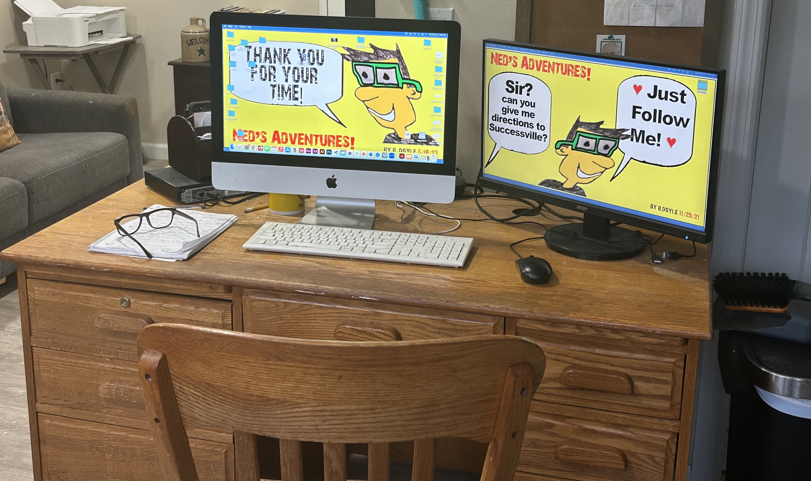
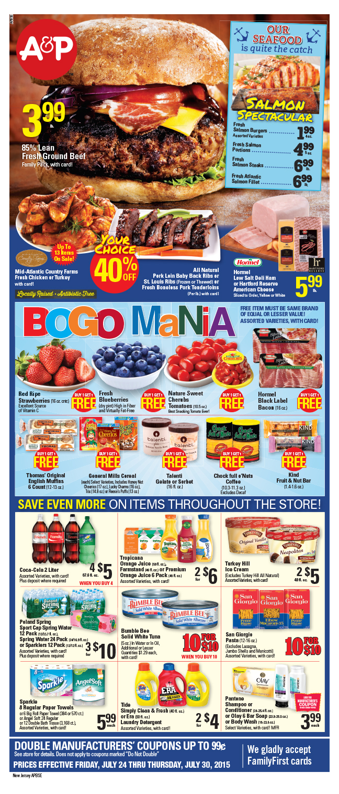
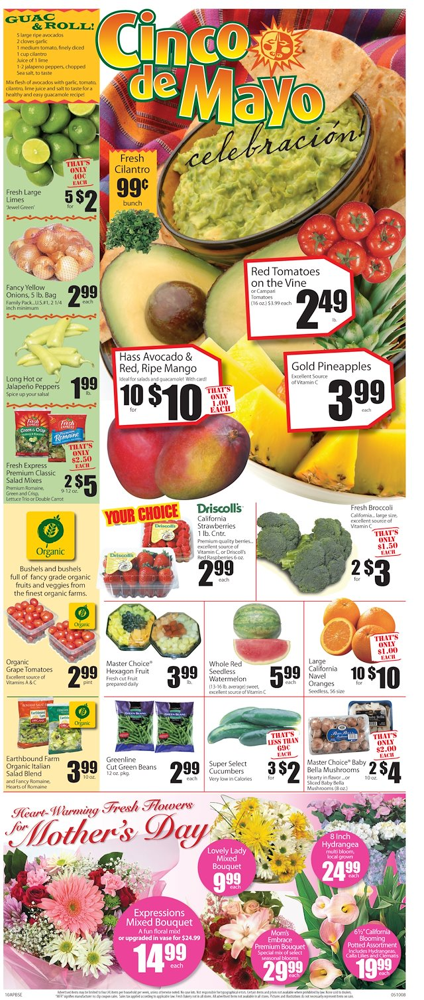
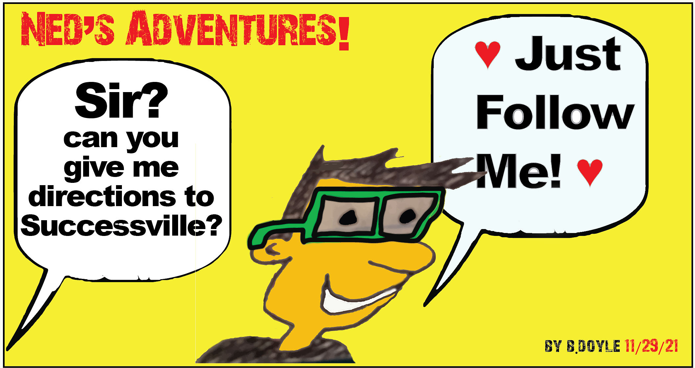

Live in YOUR Good!
MY DIGITAL RESUME...
I created six very cool websites using Visual Studio Code as I for now used GitHub as my Free Hosting Platform to showcase my work to the masses. I hope you enjoy all of them. This here now is a short cut to those websites that you also see on the main home page. In this section I show you my digital resume journey. From 1997 to today, I had a wonderful adventure which I would love to share now to you. It shows all my professional stops and how I grew as a productive person. This here now is a short cut to this website that you also see on the main home page. In the menu bar is number one here. ① My Digital Resume; (Thank you for your time!) 😉
MY STORY
 I spent 20+ successful years as a graphic designer where I worked as a print designer on the production side of things where today it seems everything is digital. That is cool. That's called progress. As a result, Circulars and/or Newspapers were replaced by websites and other electronical delights to advertise products. The future is indeed exciting. Back in the day, as a younger artist, I went on an extensive three part inverview at A&P Corporate in July 1997 and I secured employment from it that gave me 18.5 productive years designing food circulars and more. It was considered Happy Times! A&P went out of business in late 2015. It wasn't the workers fault as history sees it. We were all talented! Moving forward from that in 2016, I bounced around to Bowie, Maryland and then to Northern NJ doing the same type of things as A&P. Each of those locations knew my work at A&P so it was very easy to get hired there in MD and NJ. Again, that 1997 successful interview from A&P was the driving force from 2016-2019. STRONG word of mouth carried me through for sure.
I spent 20+ successful years as a graphic designer where I worked as a print designer on the production side of things where today it seems everything is digital. That is cool. That's called progress. As a result, Circulars and/or Newspapers were replaced by websites and other electronical delights to advertise products. The future is indeed exciting. Back in the day, as a younger artist, I went on an extensive three part inverview at A&P Corporate in July 1997 and I secured employment from it that gave me 18.5 productive years designing food circulars and more. It was considered Happy Times! A&P went out of business in late 2015. It wasn't the workers fault as history sees it. We were all talented! Moving forward from that in 2016, I bounced around to Bowie, Maryland and then to Northern NJ doing the same type of things as A&P. Each of those locations knew my work at A&P so it was very easy to get hired there in MD and NJ. Again, that 1997 successful interview from A&P was the driving force from 2016-2019. STRONG word of mouth carried me through for sure.
TIME TO PIVOT

Then the Covid Pandemic hit in 2020 and my mom (in her 80s now) getting dementia 🙏 (explained in Digital Resume here under About my Mom...) complicated matters where everything changed for me professionally. I did what I had to do. I moved closer to where she lives now too. However, I had to reinvent myself as an artist as I learned web design on my own using online teaching. During this time, reliable past contacts were lost (defined as valuable colleagues) over those years as everyone moved on, but what still remained for me was my strong desire to get back into this "graphic design party" and seek and obtain that "invitation to another party," so to speak, to join that group again of employed artists as we communicate again. I will reinvented myself successfully. I learned web design today and more.THE WALMART DAYS
 After a short stint at ShopRite in Parsippany, NJ. (It was two years as also an online shopper, 2020-2022.), I was at Walmart in Hackettstown, NJ. This type of job was relatable to a corporate setting where I dealt with advertising. Instead of being in an office behind a computer designing publications, I was in a store gathering those same products all over the store for the customer using a push cart. It made sense to me and I was good at it. While at Walmart, in March of 2024, I earned the award of Associate of the Month. I was kind of new to this type of experience of online shopping (It's explained in my digital resume under online shopping.), but still I did my best and was rewarded for my production. I am proud of that! I made the best out of the situation I was in. I will always do that at any job. My moms situation brought me to Washington NJ (07882) to help her out. I will do that everytime under this reality. As Walmart paid the bills to live as I trained part time on my own in graphic design and/or web design for a possible chance again at this future party. Let's chat today!
After a short stint at ShopRite in Parsippany, NJ. (It was two years as also an online shopper, 2020-2022.), I was at Walmart in Hackettstown, NJ. This type of job was relatable to a corporate setting where I dealt with advertising. Instead of being in an office behind a computer designing publications, I was in a store gathering those same products all over the store for the customer using a push cart. It made sense to me and I was good at it. While at Walmart, in March of 2024, I earned the award of Associate of the Month. I was kind of new to this type of experience of online shopping (It's explained in my digital resume under online shopping.), but still I did my best and was rewarded for my production. I am proud of that! I made the best out of the situation I was in. I will always do that at any job. My moms situation brought me to Washington NJ (07882) to help her out. I will do that everytime under this reality. As Walmart paid the bills to live as I trained part time on my own in graphic design and/or web design for a possible chance again at this future party. Let's chat today!
MORE FUN FACTS
 My past portfolio peices consisted of circular pages from A&P, Waldbaums, Superfresh, Shoppers and Pioneer Supermarkets to name a few. Front pages, grocery pages, meat pages, produce pages. I made signs to promote store sales. I was just a production artist. Putting in the items and making them correct. I was a very important part of the machine. I was the lead assistant at A&P. I created run lists there for the printer, page 1 versions, etc. It was all print design and I loved it. I was good at it. How can you show that in a past portfolio? Today, with under the digital design landscape, I want to show digital works to you as that's todays World of Design. I have a lot of intangibles then that still work today.
My past portfolio peices consisted of circular pages from A&P, Waldbaums, Superfresh, Shoppers and Pioneer Supermarkets to name a few. Front pages, grocery pages, meat pages, produce pages. I made signs to promote store sales. I was just a production artist. Putting in the items and making them correct. I was a very important part of the machine. I was the lead assistant at A&P. I created run lists there for the printer, page 1 versions, etc. It was all print design and I loved it. I was good at it. How can you show that in a past portfolio? Today, with under the digital design landscape, I want to show digital works to you as that's todays World of Design. I have a lot of intangibles then that still work today.


A&P PAGE 1 LOOK
I would input the text and the proper picture for the page 1 version as it was a Summer Sale Promotion here. The creative department next game their blessing. Then I would version out the page 1's to fit that stores requirements. Some get a different deli item, or some get retail changes, like in the Coca-Cola 2 Liter or Turkey Hill Ice Cream boxes. Some stores get a liquor or beer item. Some don't. This one was the base version. Making sure the correct address on each version was extremely important. There were many versions each week. Runlists were made my me each week to make sure each page went to the proper stores requirements. Proof reading was important. (page 6 example here also from an A&P version on this desktop view.)

EXTRA--XTRA! : The actual work done on the websites NOW was completed with the help of Visual Studio Code Editor. I was self-taught as free instructional videos on YouTube and affordable priced videos off Udemy.com became my teachers where I learned web design and more. I also worked with iMovie, Illustrator, Photoshop and PowerPoint to help with my projects, all included in my skill set bag. It was a slow and enjoyable process. Each year I got better. Remember please, I was a production artist. I did things creativitly to a respectable degree but my aim and bosses desire was for me to make sure the advertisements content was inputted correctly along with the proper artwork to meet any deadline. Then the creative department would make it pretty.